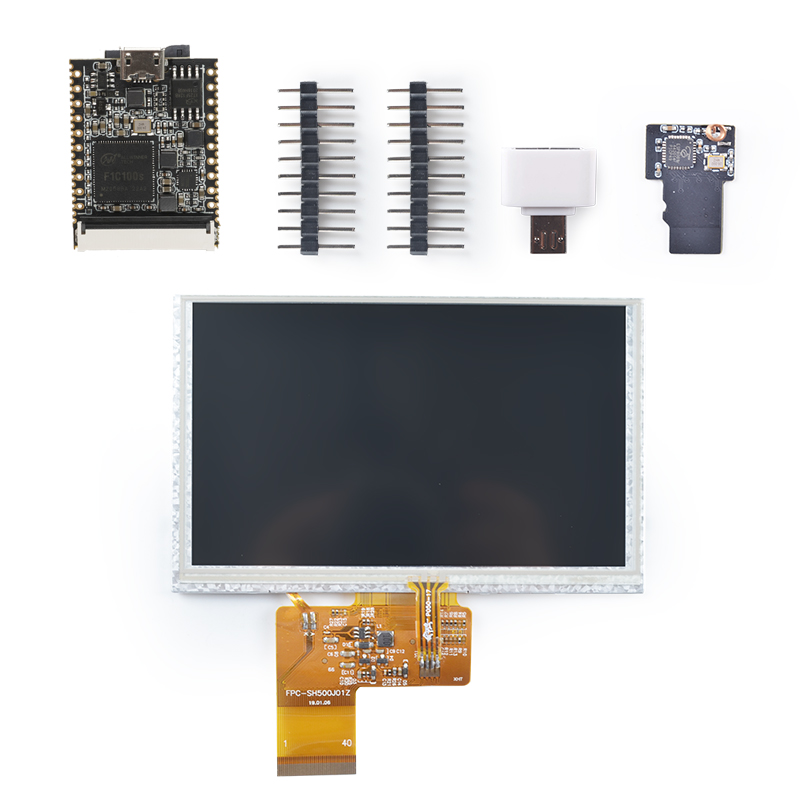
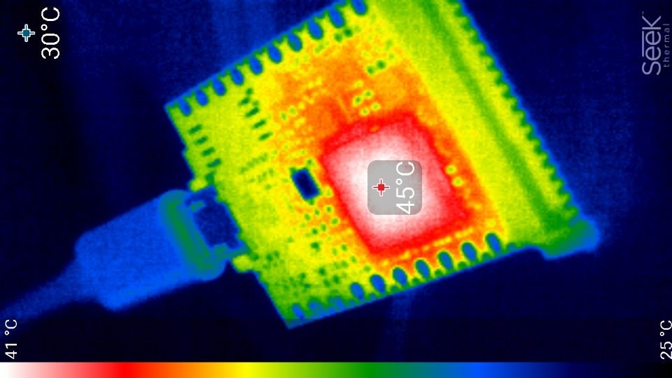
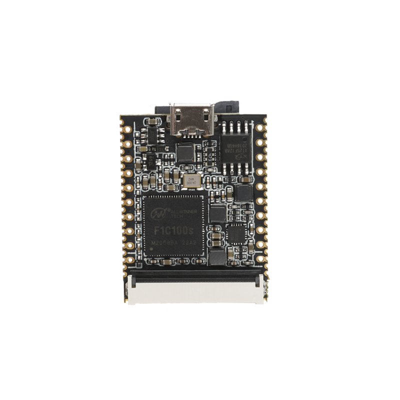
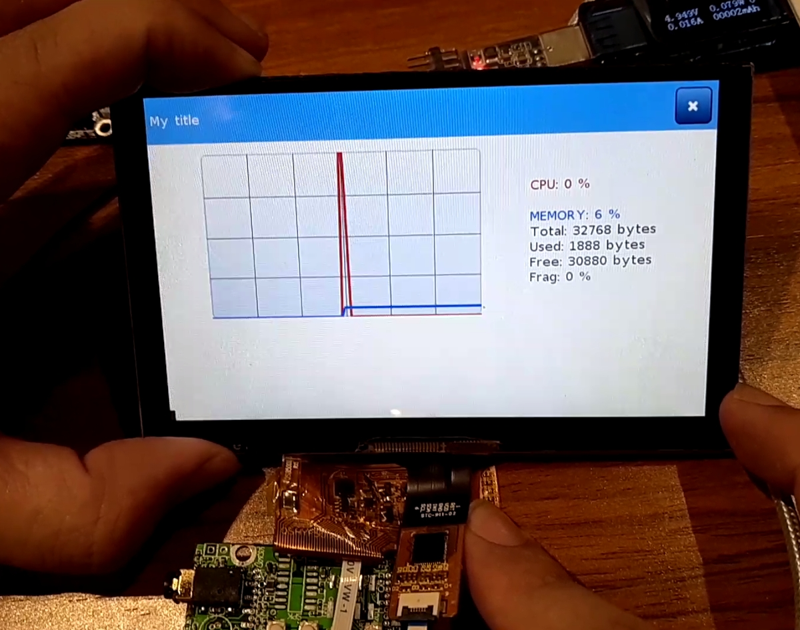
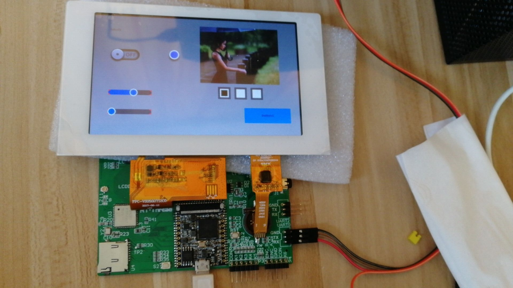
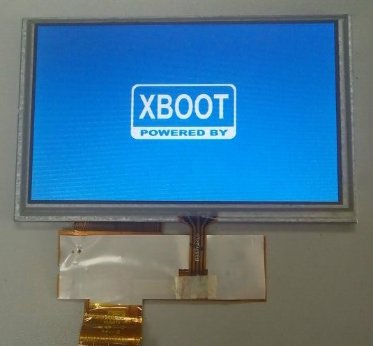

初见
从硬件说起
荔枝派Nano（下面简称Nano）是一款精致迷你的 Arm9 核心板/开发板，可用于初学者学习linux或者商用于产品开发。 Nano 在与SD卡相当的尺寸上（25.4 * 33mm）提供了丰富的外设 （LCD,UART,SPI,I2C,PWM,SDIO,KEYADC...）和较为强劲的性能（24M\~408MHz, 32MB DDR）。
Nano 延续并发展了Zero精巧的PCB设计，使得开发和使用非常方便：
- 2.54mm排针直插面包板
- 直插40P RGB LCD
- 使用OTG口进行供电和数据传输(虚拟串口，更新固件等)
- 可配合使用使用堆叠式的WiFi 模块联网
- 可直接贴片
Nano 实物图

Nano 硬件参数
硬件参数
CPU： 全志 F1C100s， ARM 926EJS , 最高 900MHz
内存：
- 集成32MB DDR
存储：
- 预留SOP8 SPI Flash焊盘（可定制贴片8\~32MB SPI Nor Flash）;
- 板载 TF卡座，可TF启动。
显示：
- 通用 40P RGB LCD FPC座
- 可直插常见的40P 4.3/5/7寸屏幕（板载背光驱动），通过转接板可插50P 7/9寸屏
- 支持常见的272x480, 480x800, 1024x600等分辨率
- 板载电阻式触摸屏芯片，另配合底板可适配电容触摸屏
- 支持 720P 视频输出
- 支持 H.264 / MPEG 等视频流解码
通信接口
- SDIO，可搭配配套SDIO WiFi+BT 模块
- SPI x2
- TWI x3
- UART x3
- OTG USB x1
- TV out
其它接口
- PWM x2
- LRADC x1
- Speakerx2 + Mic x1
电气特性
- Micro USB 5V供电； 2.54mm 插针 3.3V\~5V供电； 1.27mm 邮票孔供电
- 输出 3.3V ，可选择输入RTC电压
- 900MHz linux空载运行电流 54mA， 带屏运行电流 \~250mA
- 存储温度 -40\~125℃，运行温度 -20\~70℃
发热情况

Nano 手册资料
国内下载：
Nano 管脚定义
Nano 的管脚定义，可由下图简略说明：
靠近 2.54mm 插针的两排，列出了其引脚功能与常见复用
中间两排，分别对应着两边 1.27mm 邮票空插针的引脚功能

具体的引脚定义与可用重映射信息，还请参阅
原理图
说点软的
荔枝派 Nano 支持多个系统，可自由使用Linux、RT-Thread、Xboot或裸机等进行操作。



荔枝派Nano 支持从SPI Flash中启动系统，便于降低成本，适宜商用开发。
用到哪去
荔枝派Nano 的目标应用场景是：
- 使用较复杂的通信接口和协议的物联网应用
- 需要较美观，复杂逻辑的人机交互界面的应用
- 需要较多运算(相对于常用MCU)的应用场景
- 需要使用RTT、linux下的开源软件包进行快速开发的场景
- 高端极客玩家，在体积、性能、易用性 上取得平衡。
- 入门级玩家，软件工程师，使用熟悉的语言进行硬件diy。
上手小说明
- 请在插拔 Micro-USB 时尽量小心注意，建议您在到手后，向 USB母座的两个固定脚上堆锡
- Nano 需要插卡启动（或者焊接spi flash），只插上 USB基本是无反应，屏幕无输出状态，但可在不插卡无 flash 状态下通过 USB 启动 U-boot
- Nano 的系统调试串口是 UART0 ，即板子丝印上的的 “U0：Tx Rx” 标识的两个引脚
- 简单的可用性测试请参考
下一节内容，需要您提前准备
- 1.一个 usb转ttl 的工具
- 2.焊好排针(可选)
- 3.接好串口
- 4.准备一根 Micro-USB 数据线
- 随机附带了一小张二维码贴纸，扫一扫即可进入本文档中心 ，您可将其贴于盒子表面或方便之处
- 如果您有什么疑问，请先翻阅一下对应文档下方的评论区，再联系我们或在评论区下记录您的疑惑，然后等待我们的回复；之后我们也会挑选出具有代表性的问题，在下一节汇总撰写这些问题的解决方法
如果收到板子后还有其他疑问，请在 官方交流QQ群：488268051 或 Sipeed BBS 求助吐槽 ,在 荔枝派Telegram电报群 讨论技术与获取资讯，感谢。